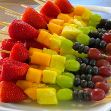
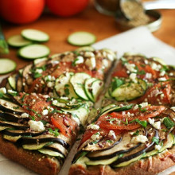
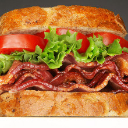
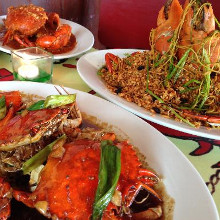

Dobrodošli
Restoran datira još od 1920. godine pod imenom Kosmaj. Sa bogatom tradicijom, preko 90 godina, menjao je ime, ali je očuvao duh starog Beograda. Renoviranjem 2005. godine dobija sofisticirani spoj restoranske elegancije i boemske atmosfere Više informacija.
Novosti
Pratite novosti iz restorana Varoš kapija ... saznajte šta naši kuvari krčkaju za Vas po FANTASTIČNIM CENAMA , kojim slatikišima možemo da Vam zasladimo dan, budite u toku sa muzičkim dešavanjima, ketering ponudama za Vaše proslave .
Kako do nas?
Stići do restorana Varoš kapija je veoma lako. Nalazimo se u strogom centru Beograda, tik uz Zeleni Venac i u neposrednoj blizini ulice Knez Mihajlove i Trga Republike. Ako dolazite kolima, javna garaža Obilićev Venac je na samo par koraka od nas.
Preporucena jela
Vocni raznjici
detaljnije

Vegan pizza
detaljnije

Sendvichina
detaljnije

Neka jela
detaljnije

El Restorante
General Ždanova 36, 11000 Beograd
Tel. + 381 (0)11 39 06 877
+ 381 (0)11 39 08 343
Fax. + 381 (0)11 39 08 608
info@kumbara.rs